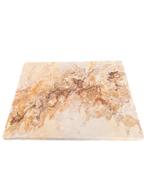

Mascotas
📌 Amo las mascotas y tengo dos hijas perrunas, Ashley y Leia

🌎 Soy de Bogotá - Colombia
📧 e-mail: yessicasta@gmail.com
Tengo 39 años
Me apasionan los retos de razonamiento, soy una persona con capacidad de análisis, se me facilita el relacionamiento con la gente, el trabajo en equipo, la resolución de problemas y me encanta aprender constantemente.
🎓 Ingeniera de sistemas
Conocimientos en java, Python, Html, CSS, JavaScript, Flask, React, Node, GIT y metodologías ágiles como SCRUM.
Actualmente en formación en el bootcamp JAVASCRIPT FULL-STACK gracias a Guillermo Rodas y a undefined-academy.
Perfil GitHub📌 Amo las mascotas y tengo dos hijas perrunas, Ashley y Leia
📌 Me encanta pintar en mi tiempo libre, este es el primer cuadro que pinté:
| Comando | Función |
|---|---|
| cal | Muestra calendario del mes actual |
| rm -r | Permite eliminar una carpeta dada una ruta |
| touch | Crea un archivo nuevo dada una ruta y/o nombre |
| cat | Imprime el contenido de un archivo dada su ruta y/o nombre |
| mv | nos permite mover un archivo o carpeta dada una ruta inicial y una final |
| Comando | Función | Alias | Ejemplo |
|---|---|---|---|
| findd | permitirá buscar un archivo dentro de la ruta en que se encuentre | alias findd="ls ~/ | grep $1" # siendo $1 es el primer y único parámetro | findd Doc |
| nomd | permitirá ejecutar un script dev | alias npmd="npm run dev" | npmd |